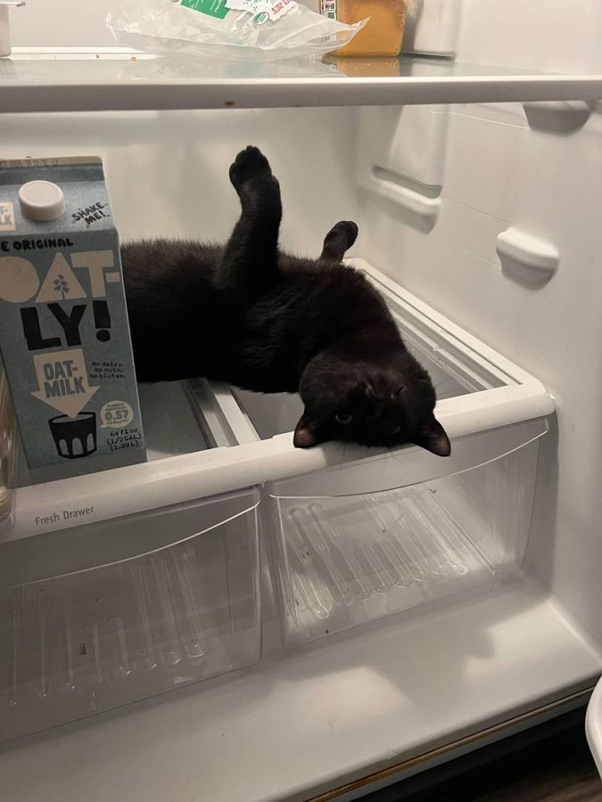
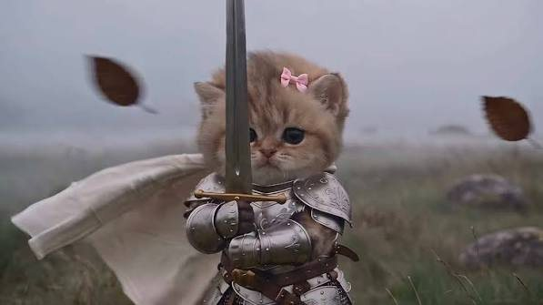
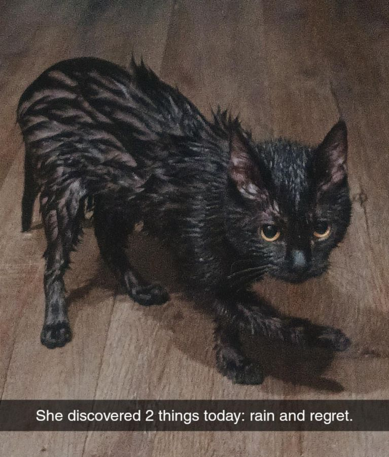

I ran a research agent across the clinical trials, the Cochrane reviews and the drug pipeline, had it put this site together, and reviewed the whole thing.
Hormones control the pain in most women. Dienogest or a hormonal IUD is the evidence-backed first move.Lesions run on estrogen. Both cut the supply. Cochrane, 33 trials.
If those fail, the relugolix combination pill. Three in four women get real relief.FDA approved for endometriosis since 2022. Two Phase 3 trials, 1,261 women.
Get the pelvic floor assessed. It becomes a second pain source that no hormone touches.Physiotherapy takes about two points off a ten-point pain scale, and it holds at a year.
Surgery works when the surgeon is an excision specialist. Pair it with an IUD after.The IUD was the only drug that cut recurrence after surgery in a 16-trial analysis.
The first non-hormonal drug in history is in Phase 3. Results 2028. The trial is recruiting now.HMI-115, a monthly antibody injection. Phase 2 cut pelvic pain in half.
Every clinic in the world climbs the same four rungs. What changes is how much evidence sits under each one.
Where everyone starts. Guidelines recommend NSAIDs, but Cochrane found a single usable trial of 24 women. They take the edge off. Nobody has shown they do more.
Dienogest, the combined pill, or the hormonal IUD. Dienogest: 2.6 points off a ten-point pain scale across 33 trials. The pill works at about half that. The IUD is the one to have after surgery.
Relugolix combination in the US, linzagolix in Europe. They switch the ovaries off and add a little estrogen back so bone is protected. Three in four respond. Bone loss under 1% at two years.
Cochrane rates the pain evidence low quality. The fertility benefit is clear, and many women get years of relief. Outcomes depend on who holds the instrument: fellowship-trained excision specialist, not a general OB-GYN.
The only number that matters in a drug trial is the gap between the drug and the sugar pill. These are the treatments where that gap is large and the trial was blinded.

Years of pelvic pain teach the pelvic floor muscles to clench. The spasm becomes its own pain source, and no hormone touches it. One assessment visit tells you whether this is part of your pain.
Seven studies pooled in 2026. Hands-on local work and electrotherapy beat general exercise. A 2025 trial checked again a year later and the gain was still there.
100 units into the spasming muscles, done at specialist pain clinics. Most women in the NIH trial cut their pain medication. Small trial, properly blinded.
Acupuncture and exercise both show pain reductions across small trials. Low risk, thin evidence, reasonable to try.
A huge market, almost no regulation. This is what the placebo-controlled trials show. One strict 2026 review that filtered for trial integrity found nothing beats placebo, so read the left column as cheap and plausible, not proven.

For forty years every endometriosis drug has been a hormone. That is changing. These are the trials that matter, in the order their results land.
Phase 3, Netherlands. Targets the nervous system's pain amplification rather than the lesions.
Phase 3 · recruitingPhase 2, Sweden. Blocks the specific prostaglandin behind the pain without the stomach and kidney cost of NSAIDs. Fully enrolled.
Phase 2 · enrolledPhase 2, Boston Children's Hospital. A diabetes drug as an add-on, on the theory that blood sugar regulation calms the inflammation.
Phase 2 · runningAn antibody that blocks the prolactin receptor. Non-hormonal, one injection a month, no bone loss, no hot flashes. Phase 2 cut period pain 42% and non-period pelvic pain 50%, published in The Lancet's women's health journal this month. FDA Fast Track and Breakthrough status. The first non-hormonal endometriosis drug to reach Phase 3.
Phase 3 · recruiting · NCT07318688Edinburgh. A repurposed cancer drug that starves lesions of lactate. A 100-woman randomized trial just finished; the definitive UK trial reports around 2030.
Feasibility doneThe order I'd take it in.
Painkillers or a basic pill only: dienogest or a hormonal IUD is the next step. Hormones already failed: relugolix combination, which has the strongest trial data on the market.
One visit with a pelvic floor physiotherapist. If there's spasm, that's a second pain source with its own fix.
Never excised, or only ablated: find a fellowship-trained excision specialist. Hormonal IUD afterward so it lasts.
Vitamin C 1,000 mg and vitamin E 800 IU daily. Curcumin if on dienogest. Melatonin 3 to 5 mg at night if sleep is bad. Keep a pain log and judge by the numbers.
Phase 3 is recruiting under NCT07318688. Enrolling means a real shot at the drug two years before it can be bought.
Research, not medical advice. Everything here is something to bring to a specialist.